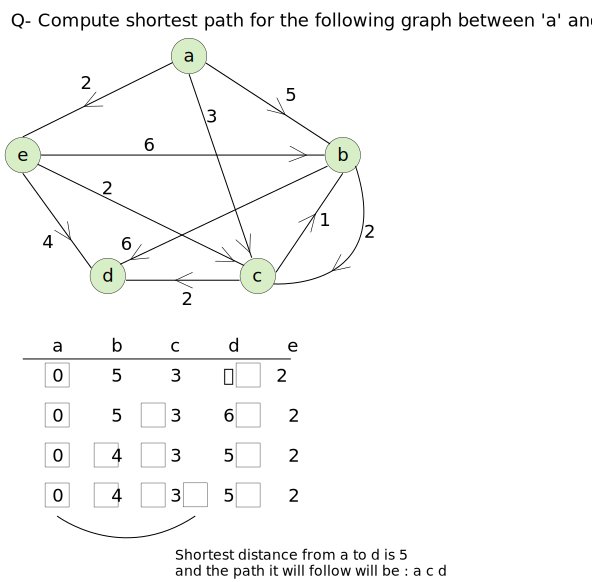
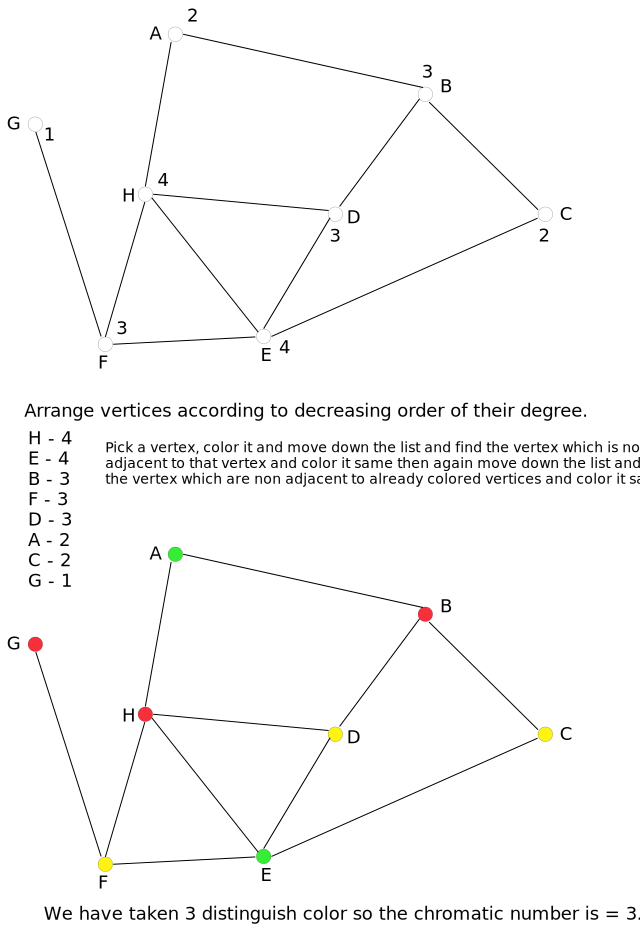

Some terminologies
Eulerian ciruit : l - e15 - k - e14 - j - e11 - i - e10 - h - e8 - g - e7 - f - e5 - e - e4 - d - e3 - c - e2 - b - e1 - a - e16 - l - e13 - j - e12 - h - e9 - f - e6 - d - e18 - b - e17 - l.
1. Determine a minimum Hamiltonian circuit for the graph given below.
Sol: As every vertex should be covered so - ( a 2 d 5 e 6 c 4 b 1 a ) will be minimum Hamiltonian circuit
2. Draw a graph with six vertices containing a Hamiltonian circuit but not Eulerian Circuit.
Sol:
We can traverse all the vertex but can't traverse all edge without repeating some edge.
3. Discuss the diagram shown below
(i) Draw Hamiltonian circuit and Hamiltonian path.
(ii) Is it Hamiltonian graph?
(iii) Is it Euler Graph?
Question ↓
Q- Determine the chromatic number of graph below
Sol:
Example: Find the chromatic number of the following graph using Powell's algorithm.
Reference ↓